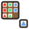

Level 1
This game needs 3D graphics
This browser or device has 3D graphics switched off. Try one of these instead:

Missing TileOne tile is missing. Spot the pattern and find the tile that fits the gap.
This browser or device has 3D graphics switched off. Try one of these instead:
A wrong tile greys out and explains itself ("Look at the colour: each row has its own colour"), so every miss teaches the rule, and the right tile settles into the gap while your helper cheers. Nothing is saved: ticks and stars for finished levels last only this visit.
Matrix reasoning: spotting what changes along the rows and down the columns, then finding the tile that fits. It is the shape of puzzle used in non-verbal reasoning papers, but this is practice, not a test: nothing is scored and nothing is saved.
Ages 7+ · Logic & Puzzles · about 10 minutes